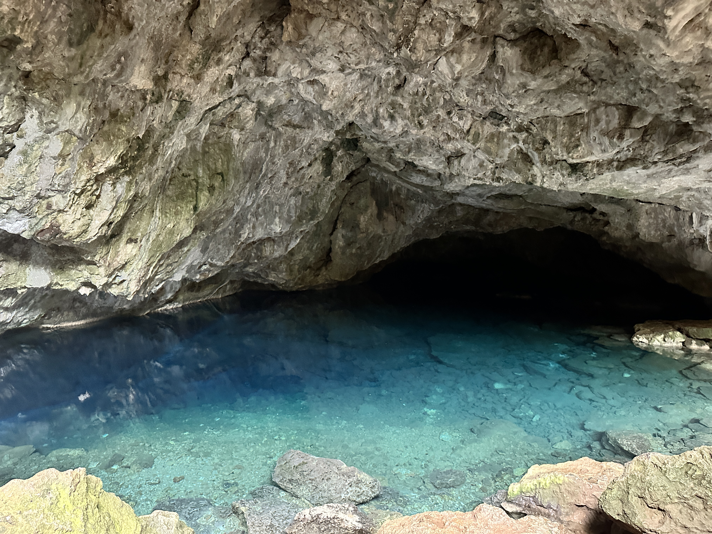

Kerim Kochekov
PhD candidate at HKUST
About Me
I am PhD candidate at Hong Kong University of Science and Technology (HKUST) under the supervision of Prof. Amir Goharshady. I am funded by Hong Kong PhD Fellowship Scheme (HKPFS) and my research interests mainly focus on Parameterized algorithms and Programming languages.
Contact
Personal email
kerim.kocekow@gmail.com
HKUST email
kkochekov@connect.ust.hk
Telegram
Phone
+852 550 264 32
Education
Hong Kong University of Science and Technology PhD in Computer Science and Engineering
2022 September - 2026 August (expected)
- Passed the interview process with a success rate of 1.7% (number of offers/number of interviewees).
- Funded by Hong Kong PhD Fellowship Scheme.
Innopolis University BSc in Computer Science
2018 August - 2022 August
- Became a finalist 3 times at the ICPC Northern Eurasia finals.
Publications
Conrado, G. K., Goharshady, A. K., Kochekov, K., Tsai, Y. C., & Zaher, A. K. (2023). Exploiting the Sparseness of Control-flow and Call Graphs for Efficient and On-demand Algebraic Program Analysis. Proceedings of the ACM on Programming Languages, OOPSLA. [Paper] [Artifact]
Teaching
| When | Position | Where |
|---|---|---|
| February 2024 - Present | Teaching Assistant (TA) of the COMP 3711H - Honors Design and Analysis of Algorithms | Hong Kong |
| June 2023 - September 2023 | Turkmenistan IOI Team Coach | Remote |
| February 2023 - May 2023 | Teaching Assistant (TA) of the COMP 4901W - Blockchain, Cryptocurrencies and Smart Contracts | Hong Kong |
| January 2023 | inzva Winter Camp Guide | Istanbul, Turkey |
| August 2022 | (*) Turkmenistan IOI Team Coach | Remote |
| June 2022 | inzva Summer Camp Guide | Istanbul, Turkey |
| December 2020 - August 2021 | (**) Kyrgyzstan IOI Team Associative Coach | Bishkek, Kyrgyzstan |
| July 2019 - September 2020 | Turkmenistan IOI Team Deputy Leader | Remote |
| July 2019 - August 2019 | Turkmenistan IOI Team Deputy Leader | Baku, Azerbaijan |
Achieved results during the training period:
(*) 1 IOI 2022 Bronze medal
(**) 4 IOI 2021 Bronze medals, 1 VKOSHP 2021 Bronze medal, 1 EJOI 2021 Gold medal, 2 Info(1)Cup 2021 Silver Medals, 2 RMI 2021 Silver Medals, 3 IZHO 2021 Bronze Medals
(*) 1 IOI 2022 Bronze medal
(**) 4 IOI 2021 Bronze medals, 1 VKOSHP 2021 Bronze medal, 1 EJOI 2021 Gold medal, 2 Info(1)Cup 2021 Silver Medals, 2 RMI 2021 Silver Medals, 3 IZHO 2021 Bronze Medals
Awards
2022 Round D: ranked 45th place over 8062 participants (top 0.5%)
2022 Round B: ranked 330th place over 5716 participants (top 5%)
2021 Round B: ranked 59th place over 7398 participants (top 1%)
2021 Round A: ranked 242th place over 19840 participants (top 1%)
2020 Round G: ranked 280th place over 8132 participants (top 3%)
2020 Round C: ranked 262th place over 13650 participants (top 2%)
Conference, Workshop, and Schools
| When | What | Where |
|---|---|---|
| 14th - 20th January, 2024 | POPL 2024 - Symposium on Principles of Programming Languages | London, United Kingdom |
| 25nd - 27th October, 2023 | OOPSLA 2023 - Object-oriented Programming, Systems, Languages, and Applications | Cascais, Portugal |
| 4th - 16th June, 2023 | CIMPA Research School on Graph Structure and Complex Network Analysis | Sirince, Izmir, Turkiye |
Service
| When | What | Where | Role |
|---|---|---|---|
| 6th - 11th April 2024 | TACAS 2024 - International Conference on Tools and Algorithms for the Construction and Analysis of Systems | Luxembourg City, Luxembourg | Artifact Evaluation Committee |
Projects
Distributed File System (DFS) @Github
- Implemented the DFS in the RPyC library of Python. Configured replication strategy similar to Hadoop File System.
- Deployed a project to AWS using Docker to test scalability and fault tolerance.
Distributed Online Judge @Github
- Built a simple distributed computing application with my team to test programs and problems against test cases in programming competitions. The project aimed to port the approach of Lichess's computer analysis feature to competitive programming platforms, allowing participants to donate their machine's CPU and memory to disburden the server and test other participants' submissions in a fast way, without the need for a load-balancer.
- The backend of the judge server was maintainted using Django and programs were tested using judge0.
Coverage measure of Java programs @Github
- Used librart by Soot to transform a Java program into bytecode and measure the statement, branch, and line coverage on the test suites generated by Randoop.
- The maximum difference between the coverages on generated test suites was at most 5% with existing popular algorithm by EclEmma and my implemented algorithm.
Mentees
| When | Who | Organization |
|---|---|---|
| 1st November, 2023 - Present | Esma Ekmekçi | Yildiz Technical University |
| 17th October, 2023 - Present | Haşim Zafer Çiçek | Hacettepe University |
| 1st July - Present | Abolfazl Soltani | Sharif University of Technology |